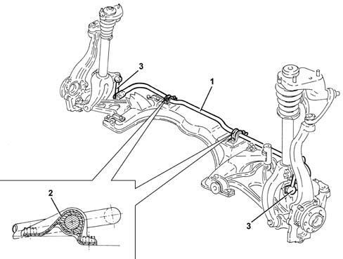

4410C stabilizer bar and anchorage struts
- Path
- Descriptions > 44 SUSPENSION AND WHEELS > 4410 FRONT SUSPENSION > 4410C stabilizer bar and anchorage struts
- Kind
- system description
- Applies to
- engines: 1.6 TS, 2.0 TS; all production periods
- Interactive page
- https://sloeber94.github.io/elrnDB-a147/en/#/3022502
Applies to: engines: 1.6 TS, 2.0 TS; all production periods
SPECIFICATIONS:
VIEW OF ASSEMBLY

1 - Front anti-roll bar 2 - Mountings 3 - Anchorage links
The anti-roll bar or torsion bar, of tubular section for reduced weight, is anchored to the chassis by means of flexible blocks contained in approriate mountings, and to the shock absorber forks by means of two links with ball joints. The action of the torsion bar reduces rolling on bends, minimizing changes in the characteristic angles of the suspension. If the movement of the suspension arm is symmetrical on both sides, the torsion bar does not affect the stiffness of the suspension, as it acts only if asymmetrical movements between the two arms of a single axle are created.